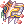
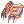

Illusion of Frozen (Español)
Quest Principal
| Requisitos | |
|---|---|
| Nivel Base: | 110 |
| Lugar de Inicio: | ice_d03_i 155/43 |
| Recompensas | |
| Experiencia: | 30,000,000 (Base) y 30,000,000 (Job) |
| Items: | 3  Illusion Stones Illusion Stones
|
- Ve al segundo piso de Ice Cave Dungeon y entra al portal que se encuentra al sur del mapa (
ice_dun02 150/11). También puedes acceder al mapa usando el Warper > Illusion Dungeons > Illusion of Frozen. - Habla con Jays en la entrada (
ice_d03_i 155/43), está congelado y necesita algo de ayuda. - Te pedirá reunir 10 Dry Twigs de los Dry Dirt alrededor del mapa.
- Una vez tengas los suficientes, regresa a la entrada y habla nuevamente con Jays. Verás que los Dry Twigs no fueron suficiente para romper el hielo, por lo que ahora nos pedirá cazar los siguientes monstruos:
- 10 Furious Ice Titans.
- Después de que los hayas matado, regresa con Jays y habla con el. Nuevamente no funcionó , por lo que esta vez nos pedirá romper el hielo por la fuerza.
- Jays aparecerá como una mob, atácalo hasta derrotarlo y tras eso regresará como NPC. Esta mob solo puede ser vista por ti.
- Habla con Jays y ahora también Brides querrá que rompas su hielo. Has lo mismo, pero esta vez con Brides.
- Habla con Jays una vez mas y Brides te explicará porque estaban congelados. Serás recompensado con un poco de experiencia y 3 Illusion Stones.
Has desbloqueado la Quest diaria Brides and Jays. Estará en cooldown una vez completes la Quest Principal.

Quest Diarias
Brides and Jays
| Requisitos | |
|---|---|
| Nivel Base: | 110 |
| Lugar de Inicio: | ice_d03_i 155/43 |
| Recompensas | |
| Experiencia: | 30,000,000 (Base) and 30,000,000 (Job) |
| Items: | 5 Illusion Stones
|
Esta Quest diaria es casi lo mismo que la Quest Principal. Ten en cuenta que ni Brides ni Jays pueden ser vistos mientras tengas las Quest en cooldown.
- Habla con Jays. Primero tendrás que reunir 10 Dry Twigs de los Dry Dirt alrededor del mapa.
- Tras reunir los items, regresa con Jays.
- Te pedirá cazar 10 mobs de uno de los siguientes grupos. La mob asignada es aleatoria, habla de nuevo con Jays si te saltaste el diálogo u olvidaste que mob debías cazar.
- 10 Furious Snowier
o - 10 Furious Gazeti
o - 10 Furious Iceicle
- 10 Furious Snowier
- Regresa con Jays y habla con el.
- Rompe el hielo de Jays una vez se convierta en mob.
- Habla con Jays.
- Ahora rompe el hielo de Brides.
- Habla nuevamente con Jays y serás recompensado con experiencia y 5 Illusion Stones.
Daily Quest Reset

Como mecánica exclusiva de NovaRO, puedes reiniciar los cooldowns de tus daily quests.
Esto significa que eres capaz de farmear cuantas Illusion Stones quieras con un único personaje, sin necesidad de crear personajes adicionales para evitar los cooldowns de las quests.
Para reiniciarlos, habla con Osmundi. Puedes encontrarlo dentro de cada Illusion Dungeon en las siguientes ubicaciones:
- Illusion of Moonlight .
- Illusion of Vampire .
- Illusion of Frozen .
- Illusion of Abyss .
- Illusion of Teddy Bear .
- Illusion of Luanda .
- Illusion of Labyrinth .
- Illusion of Underwater .
Los reinicios se separan en 3 categorías distintas acorde al grupo de dificultad en que cada dungeon se encuentra. Cada reset te recompensará con una cantidad determinada de  Illusion Stones:
Illusion Stones:
- Categoría 1: Illusion of Moonlight, Illusion of Vampire e Illusion of Frozen.
- Recompensa al resetear: 12 Illusion Stone
- Recompensa al resetear: 12
- Categoría 2: Illusion of Abyss, Illusion of Teddy Bear e Illusion of Underwater - Primer Piso.
- Recompensa al resetear: 18 Illusion Stone
- Recompensa al resetear: 18
- Categoría 3: Illusion of Luanda, Illusion of Labyrinth e Illusion of Underwater - Segundo Piso.
- Recompensa al resetear: 24 Illusion Stone
- Recompensa al resetear: 24
El primer reinicio del día, para cada grupo, te otorgará 6 Illusion Stone adicionales.
Una vez completes las dailies de cualquiera de las categorías de arriba, puedes reiniciar las daily quest de dicha categoría. Tras reiniciarlas, las quests no volverán a dar mas experiencia hasta que haya transcurrido el tiempo para su reinicio normal.
Cada categoría puede ser completada y reiniciada por separado, pero no puedes reiniciar las dailies de un Illusion Dungeon en particular sin haber completado las otras dailies de su respectiva categoría.
Mob
| Imagen | Monstruo | Nivel | HP | Tamaño / Raza / Elemento |
|---|---|---|---|---|
| Furious Gazeti | 126 | 117,139 | Medium / Demon / Water 1 | |
| Furious Snowier | 129 | 105,290 | Large / Formless / Water 2 | |
| Furious Ice Titan | 133 | 137,656 | Large / Formless / Water 3 | |
| Furious Iceicle | 135 | 1,012 | Small / Formless / Water 2 | |
 Awaken Ktullanux Awaken Ktullanux
|
135 | 13,521,442 | Large / Brute / Water 4 |
Cartas
| Carta | Va en: | Efecto |
|---|---|---|
| Armadura | Reduce el daño recibido de ataques físicos de rango en un 20%.
| |
| Accessorio | Incrementa el ratio de recuperación de Red Raffle Sap, Yellow Raffle Sap y White Raffle Sap un 50%. | |
| Armadura | DEF +5, DEF +5 por cada nivel de refine.
| |
| Armadura | Incrementa el daño mágico de elemento Water un 20%. Adicionalmente, incrementa el daño mágico de elemento Water un 3% por nivel de refine.
|


Equipo
Cerca de la entrada encontrarás al Illusion Researcher (ice_dun02 152/18). En este dungeon, el es el encargado de fabricar los Objetos Illusion.
Para cada objeto, te pedirá Illusion Stones, un Equipo Base (que puede requerir cierto nivel de refine) y objetos varios que caen por drop dentro del dungeon.
Aquí puedes encontrar los objetos que puedes crear, su efecto y que piden para ser fabricados:
| Objeto | Nombre | Descripción | Creación |
|---|---|---|---|

|
MATK +50
|
| |
|  Illusion Combo Battle Glove [2] |
Incrementa el daño de
|
 +7 Combo Battle Glove [4]
100 Snowballs | |
| Illusion Sacred Mission [1] |
Int +2, Vit +3
|
| |

|
 Illusion Survivor's Manteau [1] Illusion Survivor's Manteau [1]
|
Vit +15
|
|

|
ATK +1%
|
|

 +7
+7 


 +7
+7  300
300 


 200
200  +7
+7